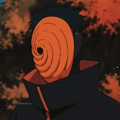

Vicky's Story
Vicky received life-saving blood donations after a serious accident. Grateful, he became an advocate, sharing his story to inspire others. He organized blood drives and partnered with hospitals, bringing the community together and saving many lives. A letter from a grateful mother affirmed his mission, showing how his efforts had come full circle.